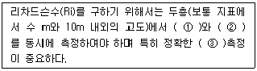
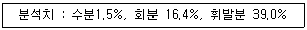
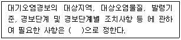

대기환경산업기사 (2005-09-04 기출문제)
1과목: 대기오염개론
1. 다음 기체 중 비중이 가장 작은 것은?
- N2O
- NO2
- Cl2
- SO2
(정답률: 알수없음)

2. 다음은 대기의 동적 안정도를 나타내는 “리차든슨 수”에 관한 설명이다. ( )안에 알맞은 내용은?

- ① 기압, ② 기온, ③ 기압
- ① 기압, ② 기온, ③ 기온
- ① 기온, ② 풍속, ③ 풍속
- ① 기압, ② 풍속, ③ 기온
(정답률: 알수없음)
3. 오존에 대하 설명으로 맞는 것은?
- 오전 7∼8시경에 최고 농도를 보이다.
- 대기 중에서 야간에 NO2와 반응하여 소멸된다.
- 자외선 강도 0.⑤mW/cm2이상일 때 발생하기 쉽다고 알려져 있다.
- 대기중 오존의 배경농도는 0.1∼0.2ppm 정도이다.
(정답률: 알수없음)
4. 로스엔젤러스 스모그 사건의 설명이 바르게 된 것은?
- 겨울철에 발생되었다.
- 햇빛이 강하게 쬐이는 낮에 발생하였다.
- 주 오염원은 공장 및 가정난방이다.
- 주 오염물질은 아황산가스이다.
(정답률: 알수없음)
5. 다이옥신을 잘못 설명한 것은?
- 300℃까지 열적으로 안정하며, 700℃ 이상에서 열분해.
- 고온에서 완전연소, 완전분해 후에도 저온에서 재생이 가능.
- 수용성은 낮지만 벤젠 등에는 용해되는 지용성으로 토양 등에 흡수.
- 다이옥신류에는 크게 PCDD(175개 이성질체), PCDF(35개의 이성질체)로 대별
(정답률: 알수없음)
6. 대기의 성분을 농도(V/V%)순으로 표시하였다. 올바른 것은?
- N2 ＞O2 ＞Ne ＞CO2 ＞Ar
- N2 ＞O2 ＞Ar ＞CO2 ＞Ne
- N2 ＞O2 ＞CO2 ＞Ar ＞Ne
- N2 ＞O2 ＞CO2 ＞Ne ＞Ar
(정답률: 알수없음)
7. 다음 중 2차 오염물질과 가장 거리가 먼 것은?
- O2
- SiO2
- NOCl
- SO3
(정답률: 알수없음)
8. 표준상태에서 한 배기가스 내에 존재하는 CO2의 농도가 0.015%라면 mg/m3 농도는?
- 295
- 432
- 672
- 884
(정답률: 알수없음)
9. 굴뚝 직경이 3m, 배출속도가 10m/sec, 배출온도 500K 대기온도 27℃, 풍속 4.2m/sec 일 때, 다음 공식을 이용하여 계산한 유효상승고(Δh)?
- 226.33m
- 258.45m
- 308.87m
- 347.98m
(정답률: 알수없음)
10. 대기가 불안정하여 난류가 심할 때 발생하며, 굴뚝부근의 지표면에서 국지적이고, 일시적인 고농도현상이 발생하기도 하는 굴뚝에서부터 배출되는 연기 형태는?
- 원추형(coning)
- 훈증형(fumigation)
- 부채형(fanning)
- 환상형(looping)
(정답률: 알수없음)
11. 오존층의 두께를 표시하는 단위인 돕슨(Dobson)에 관한 설명으로 적절한 것은?
- 지구 대기 중의 오존총량을 표준상태에서 두께로 환산했을 때 10m를 100돕슨으로 정한다.
- 지구 대기 중의 오존총량을 표준상태에서 두께로 환산했을 때 1m를 100돕슨으로 정한다.
- 지구 대기 중의 오존총량을 표준상태에서 두께로 환산했을 때 1cm를 100돕슨으로 정한다.
- 지구 대기 중의 오존총량을 표준상태에서 두께로 환산했을 때 1mm를 100돕슨으로 정한다.
(정답률: 알수없음)
12. 아황산가스를 0.25%(V/V) 포함한 발생량이 450m3/min인 매연이 년간을 통하여 30%(부피기준)가 같은 방향으로 유출되어 이 지역의 식물의 생육에 피해를 주었다. 향후 7년 동안 이 지역에 피해를 줄 아황산가스의 총량은? (단, 표준상태 기준)
- 3548톤
- 4535톤
- 5068톤
- 8562톤
(정답률: 알수없음)
13. 다음 중 가장 높은 압력을 나타내는 것은?
- 101.325KPa
- 1.013bar
- 10332mmH2O
- 1013torr
(정답률: 알수없음)
14. 분진농도가 60㎍/m3일 때 가시거리? (단, 상대습도 70%, 계수 A=1.2)
- 40Km
- 30Km
- 20Km
- 10Km
(정답률: 알수없음)
15. 어떤 지역의 일산화탄소(CO)의 평균농도가 0℃, 760mmHg 하에서 250㎍/m3이였다면, ppm 농도는?
- 0.18ppm
- 0.20ppm
- 0.25ppm
- 0.28ppm
(정답률: 알수없음)
16. 오존에 대해 가장 예민하고, 피해가 커서 지표식물로 이용 되는 것은?
- 메밀
- 알팔파
- 담배
- 아카시아
(정답률: 알수없음)
17. 수용모델에 관한 설명으로 옳지 않은 것은?
- 새로운 오염원, 불확실한 오염원과 불법 배출 오염원을 정량적으로 확인 평가할 수 있다.
- 지형, 기상학적 정보 없이도 사용 가능하다.
- 측정가료를 입력자료로 사용하므로 시나리오 작성이 용이하다.
- 현재나 과거에 일어났던 일을 추정하여 미래를 위한 계획을 세울 수 있으나, 미래 예측은 어렵다.
(정답률: 알수없음)
18. 바람에 관여하는 힘 중 “전향력”에 관한 설명으로 적절치 못한 것은?
- 지구의 자전현상에 의해서 운동하는 물체에 작용한다.
- 북반구에서는 바람방향의 우측 직각방향으로 작용한다.
- 극지방에서 최소가 되고, 적도지방에서 최대가 된다.
- 경도력과 반대방향으로 힘이 작용한다.
(정답률: 알수없음)
19. 염화수소를 발생시킬 가능성과 가장 거리가 먼 업종은?
- 석유정제공업
- 플라스틱 공업
- 활성탄 제조업
- 소오다 공업
(정답률: 알수없음)
20. 지상 10m에서의 풍속이 5m/s라면 지상 50m에서의 풍속은? (단, Deacon식 적용, 대기는 심한 역전상태(P=0.4))
- 8.5m/s
- 9.5m/s
- 10.5m/s
- 11.8m/s
(정답률: 알수없음)
2과목: 대기오염 공정시험 기준(방법)
21. 공정시험법상 따로 규정이 없이 단순히 질산(HNO3)이라 표시된 경우에 뜻하는 농도는? (단, 따로 규정이 없는 경우, 비중은 1.38)
- 35.0∼37.0%이상
- 46.0∼48.0%이상
- 55.0∼57.0% 이상
- 60.0∼62.0%이상
(정답률: 알수없음)
22. 배출허용기준 중 표준산소농도를 적용받는 항목에 대하여 배출가스유량을 보정하기 위한 식으로 적절한 것은? (단, 농도는 %, 유량은 Sm3/일 단위 적용)
- 배출가스유량 = 이론배출가스유량 ÷ [(21-표준산소농도)/이론산소농도]
- 배출가스유량 = 이론배출가스유량 ÷ [이론산소농도/(21-표준산소농도)]
- 배출가스유량 = 실측배출가스유량 ÷ [(21-표준산소농도)/(21-실측산소농도)]
- 배출가스유량 = 실측배출가스유량 ÷ [(21-표준산소농도)/이론산소농도]
(정답률: 알수없음)
23. 환경대기중의 아황산가스 측정방법 중 자동연속 측정방법이 아닌 것은?
- 용액전도율법
- 적외선 형광법
- 흡광차분광법
- 불꽃광도법
(정답률: 알수없음)
24. 대기 중 옥시단트(오존으로서)의 농도를 중성요오드화 칼륨법(수동)으로 측정하고자 지료를 채취하였다. 이 시료는 채취 후 몇 시간이내에 분석을 하여야 하는가?
- 1시간이내
- 4시간이내
- 8시간이내
- 24시간이내
(정답률: 알수없음)
25. 배출가스 중 납을 흡광광도법으로 측정하여 다음과 같은 분석결과를 얻었다. 배출가스중의 납의 농도는 얼마인가? (단, 검량선에서 구한 시험용액 1ml 중의 납량은 20㎍ 시험용액 전량이 250ml, 건조시료가스 채취량이500ℓ(0℃, 1기압)이다.)
- 8mg/sm3
- 10mg/sm3
- 12mg/sm3
- 14mg/sm3
(정답률: 알수없음)
26. 굴뚝에서 배출되는 배출가스중 이황화탄소를 가스크로마토그래프법으로 분석 할 때 사용되는 운반가스는?
- 알곤
- 산소
- 질소
- 수소
(정답률: 알수없음)
27. 굴뚝에서 배출되는 분석대상 가스별 (분석방법) 흡수액으로 틀린 것은?
- 염화수소(질산은법)- 수산화나트륨용액(0.1N)
- 황산화물(침전적정법)- 과산화수소수용액(3%)
- 황화수소(흡광광도법)- 질산암모늄용액
- 불소화홥물(흡광광도법)- 수산화나트륨용액(0.1N)
(정답률: 알수없음)
28. 흡광차분광법에서 측정에 필요한 광원으로 적절한 것은?
- 200∼900nm 파장을 갖는 중공음극램프
- 200∼900nm 파장을 갖는 제논램프
- 180∼2850nm 파장을 갖는 중공음극램프
- 180∼2850nm 파장을 갖는 제논램프
(정답률: 알수없음)
29. 굴뚝에서 배출되는 배출가스 중 암모니아를 분석하기 위해 중화적정법을 적용하는 경우, 분석에 적합한 농도는? (단, 시료가스 채취량을 40ℓ로 하였을 경우)
- 암모니아 농도 25ppm 이상
- 암모니아 농도 50ppm 이상
- 암모니아 농도 75ppm 이상
- 암모니아 농도 100ppm 이상
(정답률: 알수없음)
30. 굴뚝 등에서 배출되는 배출가스 중의 산소를 측정하는 방법으로 자동측정기에 의한 방법에 대한 설명으로 틀린 것은?
- 자기식(紫氣式)방법은 체적자화율(體積磁化率)이 큰 가스의 영향을 무시할 수 있는 경우에 적용한다.
- 자동측정기에 의한 방법은 자기식과 전기화학식으로 나눌 수 있다.
- 전기화학식은 질코니아 방식과 전극방식으로 나눌 수 있다.
- 자기식인 자기풍방식에는 덤벨형과 압력검출형이 있다.
(정답률: 알수없음)
31. 시험의 기계 및 용어설명에 관한 내용 중 틀린 것은?
- 정확히 단다 : 분석용 저울로 0.1mg까지 다는 것을 뜻한다.
- 용액의 액성표시 : 따로 규정이 없는 한 유리전극법에 의한 pH미터로 측정한 것을 뜻한다.
- 바탕시험을 하여 보정한다 : 시료에 대한 처리 및 측정할 때 시료를 사용하지 않고 같은 방법으로 조작한 측정치를 빼는 것을 뜻한다.
- 정량적으로 씻는다 : 어떤 조작에서 다음 조작으로 넘어갈 때 사용한 비이커, 플라스크 등에 정량 대상물질이 남지 않도록 세척, 제거함을 말한다.
(정답률: 알수없음)
32. 공정시험방법에서 정하고 있는 온도에 대한 설명으로 틀린 것은?
- 냉수 : 15℃이하
- 찬곳 : 0∼15℃
- 온수 : 50∼60℃
- 실온 : 1∼35℃
(정답률: 알수없음)
33. 다음은 흡광광도법에 대한 설명 중 옳은 것은?
- 흡광광도 분석장치는 광원부, 시료원자화부, 단색화장치 등으로 구성되어 있다.
- 광원부의 자외부 광원으로는 주로 중수소 방전광을 사용한다.
- 흡광도 눈금의 보정에 사용되는 것은 과망간산 칼륨용액이다.
- 광전광도계는 단색화부의 필터를 사용한 장치로 단광속형이 않고 비교적 구조가 간단하다.
(정답률: 알수없음)
34. 가스크로마토그래프의 충전물에서 고정상액체의 구비조건에 대한 설명이다. 이중 잘못 설명된 것은?
- 분석대상 성분을 완전히 분리할 수 있는 것이어야 한다.
- 사용온도에서 증기압이 높은 것이어야 한다.
- 화학적으로 안정된 것이어야 한다.
- 화학적 성분이 일정한 것이어야 한다.
(정답률: 알수없음)
35. 공기희석관능법으로 사업장의 악취 농도를 측정하려고 할 때 시료채취가 불가능한 조건과 가장 거리가 먼 것은?
- 기온이 영하 5℃이하인 경우
- 시료채취 대상 업소의 조업상태가 정상이 아닌 경우
- 비 또는 눈이 오는 경우
- 배출구에서 시료채취시 풍속이 5m/초 이상인 경우
(정답률: 알수없음)
36. 굴뚝반경이 3.0m인 원형 굴뚝에서 먼지를 채취하고자 한다. 측정점수는 몇 개인가?
- 16
- 20
- 24
- 28
(정답률: 알수없음)
37. 배출가스중의 중금속류를 분석할 때 시료채취시 사용한 여과지를 전처리로서 저온 회화법을 이용한다. 저온 회화법은 회화온도기준으로 적절한 것은?
- 100℃이하
- 150℃이하
- 200℃이하
- 250℃이하
(정답률: 알수없음)
38. 환경대기 중 먼지를 측정하는 주 시험방법은?
- 하이볼륨에어샘플러법(자동)
- 로우볼륨에어샘플러법(수동)
- 하이볼륨에어샘플러법(수동)
- 로우볼륨에어샘플러법(자동)
(정답률: 알수없음)
39. 어느 보일러굴뚝의 배출가스 온도가 240℃ 피토우관에 의한 동압이7.5mmH2O이었다. 연도의 배출가스 유속은? (단, 대기압 1atm, 피토우관계수는 1.2로 한다.)
- 약 11.7m/s
- 약 13.7m/s
- 15.7m/s
- 17.7m/s
(정답률: 알수없음)
40. 굴뚝배출가스중의 염화수소 분석법 중 대기오염공정시험법에서 채택되고 있는 방법이 아닌 것은?
- 가스크로마토그래프법
- 이온전극법
- 질산은적정법
- 티오시안산제이수은 흡광광도법
(정답률: 알수없음)
3과목: 대기오염방지기술
41. 유입계수와 속도압이 각각 0.82, 8mmH2O일 때 후드의 압력손실은?
- 약 10mmH2O
- 약 7mmH2O
- 약 5mmH2O
- 약 4mmH2O
(정답률: 알수없음)
42. 프로판(C3H8) 1Sm3을 공기비 1.1로 완전연소 시켰을 때의 건연소가스량?
- 18Sm3
- 21sm3
- 24Sm3
- 27Sm3
(정답률: 알수없음)
43. 시간당 10,000Sm3의 배기가스를 방출하는 보일러에 분진 50%를 제거하는 집진장치가 설치되어 있다. 이 보일러를 24시간 가동할 때 배출되는 분진량은? (단, 배기가스 중 분진농도는 0.5g/Sm3)
- 60kg
- 120kg
- 50kg
- 100kg
(정답률: 알수없음)
44. 다음 기체연료 중 액화석유가스(LPG)에 관한 설명 중 틀린 것은?
- 석유정제 때에 부산물로 생산되는 것과 천연가스에서 회수되는 것이 있으나, 전자의 것이 대부분이다.
- 비중이 공기보다 가벼워 인화 폭발 위험성이 높다.
- 액체에서 기체로 될 때 증발열이 있다.
- 상온에서 10∼20기압을 가하거나 또는 -49℃로 냉각시킬 때 용이하게 액화되는 석유계 탄화수소가스이다.
(정답률: 알수없음)
45. 길이 4.0m, 폭 1.2m, 높이 1.5m되는 연소실에서 저위발열량이 5,000Kcal/kg의 중유를 1시간에 200kg씩 연소하고 있는 연소실의 열 발생율은 대략 얼마인가?
- 약 11×104Kcal/kg
- 약 14×104Kcal/kg
- 약 18×104Kcal/kg
- 약 22×104Kcal/kg
(정답률: 알수없음)
46. 다음 중 액분산형 흡수장치는?
- 포종탑
- 충전탑
- 단탑
- 기포탑
(정답률: 알수없음)
47. 굴뚝 배기가스중의 수분을 축정한 결과 배기가스 1Sm3 당 25g이었다. 건조가스에 대한 수분의 용적비는?
- 3.2%
- 2.6%
- 5.1%
- 6.6%
(정답률: 알수없음)
48. 석탄의 탄화도 증가에 따른 변화로서 옳지 않은 것은?
- 매연발생률이 감소한다.
- 고정탄소가 증가한다.
- 착화온도가 낮아진다.
- 발열량이 증가한다.
(정답률: 알수없음)
49. 전기집진기의 집진율이 98%이고 집진시설에서 배출되는 먼지농도가 0.25g/m3일 때 유입되는 먼지 농도는?
- 12.5g/m3
- 15.0g/m3
- 17.5g/m3
- 20.0g/m3
(정답률: 알수없음)
50. 전기집진장치에서 2차 전류가 주기적으로 변하거나 불규칙적으로 흐르는 장애현상이 발생할 때의 대책으로 가장 거리가 먼 것은?
- 충분하게 분진을 탈리시킨다.
- 1차 전압을 스파크가 안정되고 전류의 흐름이 안정될 때까지 낮추어 준다.
- 방전극과 집진극을 점검한다.
- 조습용 스프레이의 수량을 늘린다.
(정답률: 알수없음)
51. 석탄을 공업분석하여 다음치를 얻었다. 이 석탄의 연료비는?

- 0.9
- 1.1
- 1.3
- 1.5
(정답률: 알수없음)
52. 어는 집진장치의 압력손실이 350mmH20 처리용량이 42m3/sec. 송풍기 효율 80%이다. 이 장치의 소요동력은?
- 180kw
- 200kw
- 220kw
- 240kw
(정답률: 알수없음)
53. 유량 200,000m3/day의 공기를 흡수탑을 거쳐 정화하려고 한다. 흡수탑의 접근유속을 2m/sec로 유지하려면 소요되는 흡수탑의 지름은?
- 1.2m
- 1.5m
- 2.2m
- 2.5m
(정답률: 알수없음)
54. 포름알데히드(HCHO)는 자극성 냄새를 풍기는 유독성 기체이다. 플라스틱제조 및 방부제로 널리 사용되는 포름알데히드(HCHO)속의 수소의 질량 백분율(%)은?
- 6.67
- 8.43
- 10.24
- 12.43
(정답률: 알수없음)
55. 전기집진 장치의 아래 집진기전 중 제일 먼저 일어나는 작용은?
- 부착포집(collection)
- 이온화(ionization)
- 대전(charging)
- 이동(migration)
(정답률: 알수없음)
56. 굴뚝에서 배출되는 가스를 분석하였더니 용량비로 질소 86%, 산소 4%, 탄산가스 10%의 결과치를 얻었다면 공기비는?
- 1.2
- 1.3
- 1.4
- 1.5
(정답률: 알수없음)
57. 메탄올(CH3OH) 2kg을 연소할 때 필요한 이론공기량(Nm3)은?
- 2.5
- 5.0
- 10.0
- 15.0
(정답률: 알수없음)
58. 배기가스 중 HF를 기상 총 이동단위 높이가 1.2m인 충전탑을 이용하여 NaOH 수용액으로 흡수 제거하려 할 때 충전탑의 충전층 높이는? (단, 흡수효율은 99%이다)
- 3.7m
- 4.8m
- 5.5m
- 6.8m
(정답률: 알수없음)
59. 탄소, 수소 중량조성이 각각 85%, 15%인 액체연료를 매시간당 150kg 연소할 경우 필요한 이론적 공기량(Sm3/hr)은?
- 약 1040
- 약 1260
- 약 1490
- 약 1750
(정답률: 알수없음)
60. 중유탈황법 중 가장 많이 활용되는 방법은?
- 접촉수소화 탈황
- 금속 산화물에 의한 흡착탈황
- 미생물에 의한 생화학적 탈황
- 방사선 화학적 탈황
(정답률: 알수없음)
4과목: 대기환경 관계 법규
61. 경유를 사용하는 자동차의 배출가스 중 대통령령이 정하는 오염물질이라 볼 수 없는 것은?
- 입자상물질
- 탄화수소
- 알데히드
- 매연
(정답률: 알수없음)
62. 환경부장관은 부과금 및 가산금의 징수업무를 시ㆍ도지사에게 위임한 경우 시ㆍ도지사에게 부과금 및 가산금의 얼마만큼의 액수를 징수비용으로 교부하여야 하는가?
- 100분의 3
- 100분의 5
- 100분의 7
- 100분의 10
(정답률: 알수없음)
63. 위임업무의 보고사항 내용이 '수입자동차 배출가스 인증 및 검사현황'인 경우, 보고횟수 기준으로 적적한 것은?
- 연 1회
- 연 2회
- 연 4회
- 연 12회
(정답률: 알수없음)
64. 대기오염배출시설에 해당되지 않는 것은?
- 소각능력이 시간당 50kg인 폐기물소각시설
- 소각능력이 시간당 50kg인 적출물소각시설
- 소각능력이 시간당 50kg인 폐수소각시설
- 소각능력이 시간당 50kg인 폐가스소각시설
(정답률: 알수없음)
65. 아황산가스의 1시간 평균치로의 대기환경기준은?
- 0.⑤ppm이하
- 0.1ppm이하
- 0.15ppm이하
- 0.2ppm이하
(정답률: 알수없음)
66. 대기환경보전법에 적용되는 용어의 정의로 알맞지 않는 것은?
- 매연 : 연소시 발생하는 유리탄소를 주로 하는 미세한 입자상물질을 말한다.
- 먼지 : 대기 중에 떠다니거나 흩날려 내려오는 입자상물질을 말한다.
- 가스 : 물질의 연소, 합성, 분해시에 발생하거나 물리적 성질에 의하여 발생하는 기체상물질을 말한다
- 휘발성유기화합물 : 탄화수소류 중 석유화학제품, 유기용제 그 밖의 물질로서 환경부령으로 정한다.
(정답률: 알수없음)
67. 대기오염 경보단계별 발령기준 중 주의보의 발령기준으로 맞는 것은?
- 기상조건 등을 검토하여 해당지역 내 대기자동측정소의 오존농도가 0.12ppm 이상일 때
- 기상조건 등을 검토하여 해당지역 내 대기자동측정소의 오존농도가 0.5ppm 이상일 때
- 기상조건 등을 검토하여 해당지역 내 대기자동측정소의 오존농도가 1.2ppm 이상일 때
- 기상조건 등을 검토하여 해당지역 내 대기자동측정소의 오존농도가 1.5ppm 이상일 때
(정답률: 알수없음)
68. 환경기술인의 보수교육 기준으로 적절한 것은?
- 신규교육을 받은 날을 기준으로 3년마다 1회
- 신규교육을 받은 날을 기준으로 5년마다 1회
- 환경관리인으로 임명된 날을 기준으로 3년마다 1회
- 환경관리인으로 임명된 날을 기준으로 5년마다 1회
(정답률: 알수없음)
69. 환경부령이 정하는 환경기술인의 준수사항을 이행하지 아니한 자에 대한 행정처분기준은?
- 50만원이하의 과태료
- 100만원이하의 과태료
- 100만원이하의 벌금
- 200만원이하의 벌금
(정답률: 알수없음)
70. 일산화탄소의 환경기준으로 적절한 것은? (단, 1시간 평균치 기준)
- 10ppm이하
- 15ppm이하
- 20ppm이하
- 25ppm이하
(정답률: 알수없음)
71. 연료용 유류 및 기타 연료의 황 함유기준은 누가 어떻게 정하는가?
- 세계 황 함유표준을 기준으로 환경부장관이 정한다.
- 세계표준 연료 황 함유기준으로 유류공급자가 정하고 환경부장관이 승인한다.
- 세계표준 황 함유기준 이하로 환경부장관과 유류공급자가 협의하여 정한다.
- 환경부장관이 관계 중앙행정기관의 장과 협의하여 정한다.
(정답률: 알수없음)
72. 대기환경보전법상 기후, 생태계변화 유발물질로 규정되지 않은 물질은?
- 육불화황
- 염화불화탄소
- 산소불화탄소
- 아산화질소
(정답률: 알수없음)
73. 초과부과금 산정시 오염물질 1킬로그램 당 부과금액이 가장 많은 것은?
- 암모니아
- 이황화탄소
- 먼지
- 황산화물
(정답률: 알수없음)
74. 대기오염물질발생량의 합계가 연간 50톤인 사업장의 규모구분은?
- 1종 사업장
- 2종 사업장
- 3종 사업장
- 4종 사업장
(정답률: 알수없음)
75. 고체연료 환산계수 중 원유의 환산계수는? (단, 단위 : 리터(ℓ), 무연탄(kg), 환산계수 : 1.0 )
- 1.40
- 1.50
- 1.90
- 2.0
(정답률: 알수없음)
76. 시ㆍ도지사가 자동차 정밀검사업무를 대행하는 교통안전공단 또는 지정사업자가 고의 또는 중대한 과실로 검사업무를 부실하게 한 경우 업무 정지처분에 갈음하여 부과할 수 있는 과징금의 최대금액은?
- 3천만원
- 5천만원
- 1억원
- 2억원
(정답률: 알수없음)
77. 환경부장관이 총량규제를 하고자 할 때 고시하여야 하는 사항과 가장 거리가 먼 것은?
- 규제구역
- 규제기준
- 규제오염물질
- 오염물질의 저감계획
(정답률: 알수없음)
78. 환경부장관이 설치하는 대기오염측정망의 종류가 아닌 것은?
- 오염물질의 지역배경농도를 측정하기 위한 지역배경농도측정망
- 기후, 생태계변화 유발물질의 농도를 측정하기 위한 지구대기측정망
- 산성 오염물질의 건성 및 습성 침착량을 측정하기 위한 산성강하물측정망
- 대기중의 중금속 농도를 측정하기 위한 광범위 대기중금속측정망
(정답률: 알수없음)
79. ( )안에 알맞은 내용은?

- 국무총리령
- 환경부장관령
- 대통령령
- 시ㆍ도지사령
(정답률: 알수없음)
80. 다음 중 특정 대기 유해물질이 아닌 것은?
- 이황화메틸
- 베릴륨 및 그 화합물
- 석면
- 트리클로로메탄
(정답률: 알수없음)